Eyebrow
 My eyebrows wiggle around a lot in order to express a what I’m feeling and what I’m saying. Their striking bushiness is directly from my father. I had my right eyebrow pierced last month.
My eyebrows wiggle around a lot in order to express a what I’m feeling and what I’m saying. Their striking bushiness is directly from my father. I had my right eyebrow pierced last month.
Dimple
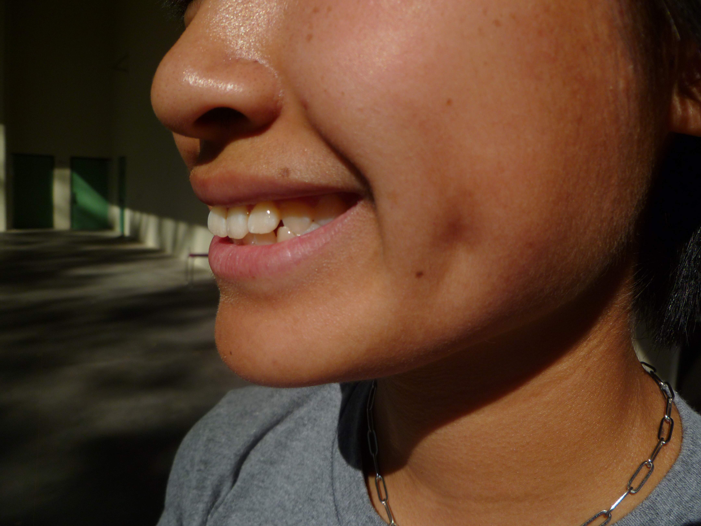
My dimples show up when I smile. I consider them an important part of who I am. Both of my parents have dimples, so I’m not sure who exactly to credit for their existence. Also; how do dimples even work?Ear
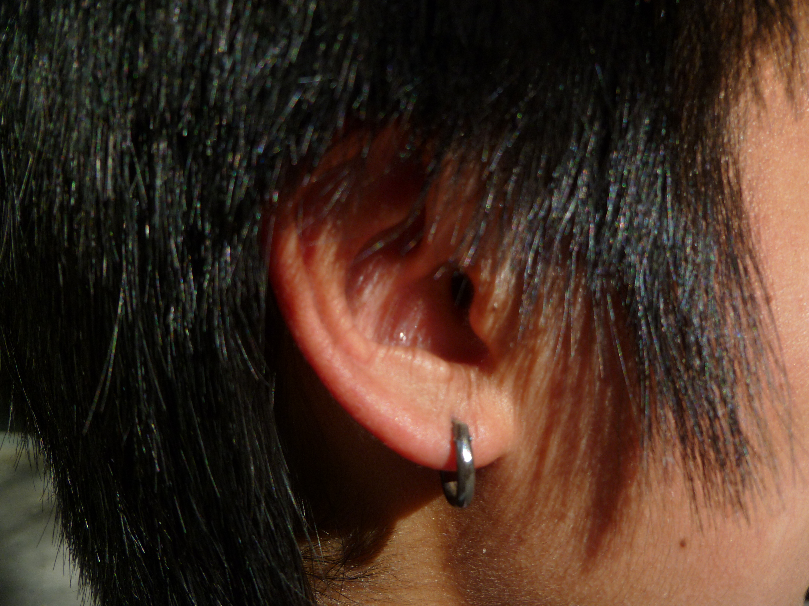
My ears help me hear the world. Right now, I’m listening to Flying Lotus. I got them pierced in the winter. I like to make fun of people whose lobes are attached to their heads. Mine aren’t. Can you wiggle your ears? I can. Do I have ear ego?Neck
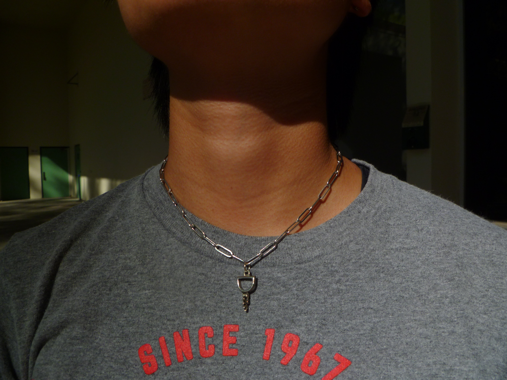
I like to wear jewlery over my neck. This is my favorite necklace. The charm is a spur. I got it at the cowboy festival hosted at Newhall last year. Inside of my neck is my voicebox. Once I go on testosterone, my adams apple will grow, and my voice will deepen.Shoulder
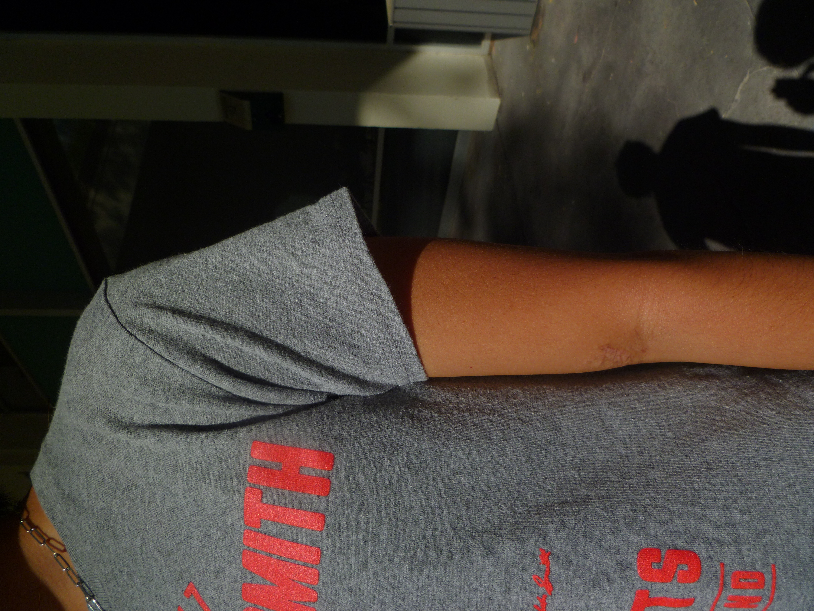
I think of my shoulders as the frame of my body. When I was rock climbing, they were a little bit stronger, but not anymore. I like a lot of clothes that tend to cut higher up on the shoulder. I like to feel pointy.Elbow
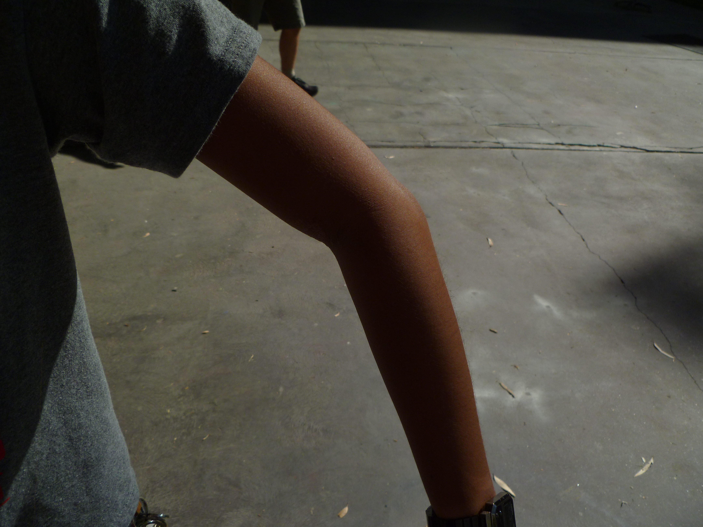
My elbows have always been a difficult thing in the history of my body. I have had on and off eczema since I was a child, and the inside of my elbows have always been a bothered area. I would like to have tattoos around and near here at some point.Wrist
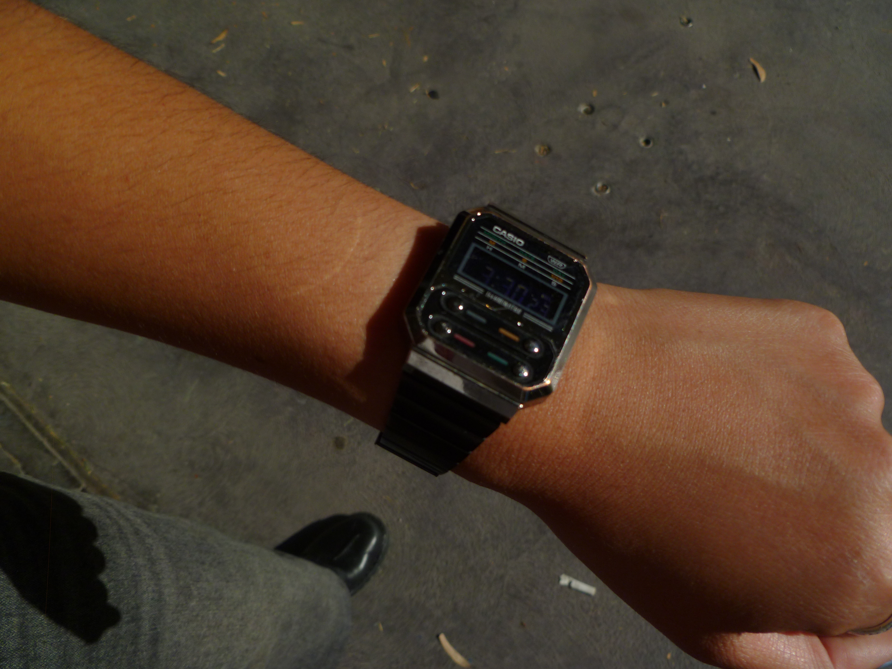
I love my wrists. I have a watch tan from wearing watches on my left wrist. My wrists are special to me because they’re my favorite place to wear jewlery. I’ve always worn bracelets. Bracelets are memories of people and parts of myself. The one I’m wearing a lot right now is a childhood bracelet I found while decluttering.Hands
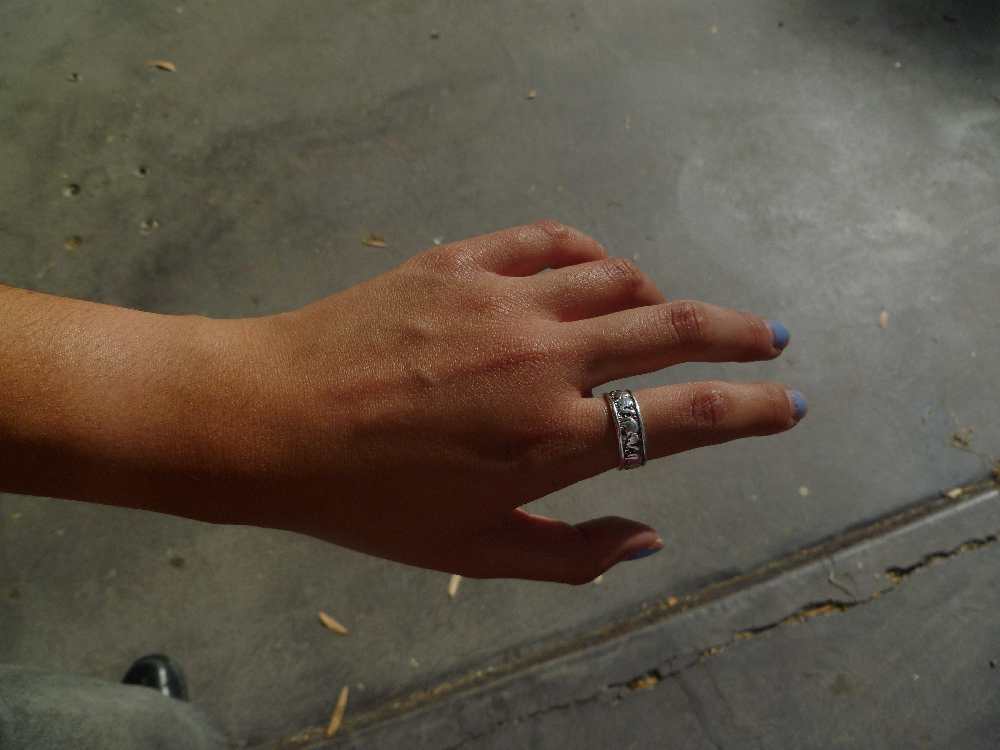
My hands help me do everything I do in a day. They help me design, they help me write, they helped me make this website. I like to wear rings and nail polish. I got the elephant ring from Barn & Charm, a store in Newhall. I got the ring with two holes from the Pasadena City College Flea Market. I got my blue nailpolish from the Daiso at the Arcadia Mall.(legs)
Waist
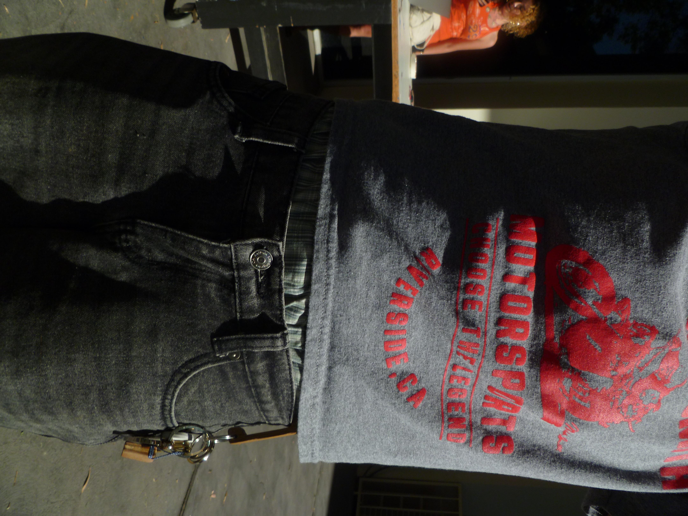
I usually am wearing a wooden carabiner that my friend Thomas made for me that holds all of my keys. They’re easy to hang off any kind of clothes. Sometimes you can see my boxers from my waist band. I personally like it. It makes me feel like myself.Knee
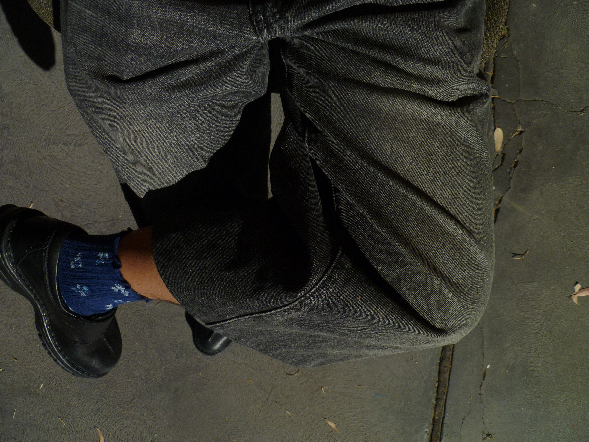
My knees are pretty cool. They help me walk around and sit down, which is pretty cool. Recently, they’ve also become victim to my bouts of eczema, which is less cool.Ankle
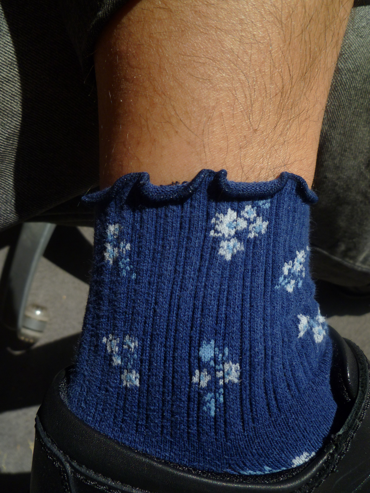
For some reason, I have a lot of scars near and around my ankle from when I was a kid. I jumped around a lot and hurt myself accidentally that way. I like to wear cute socks. Cute socks make any outfit much better.Feet
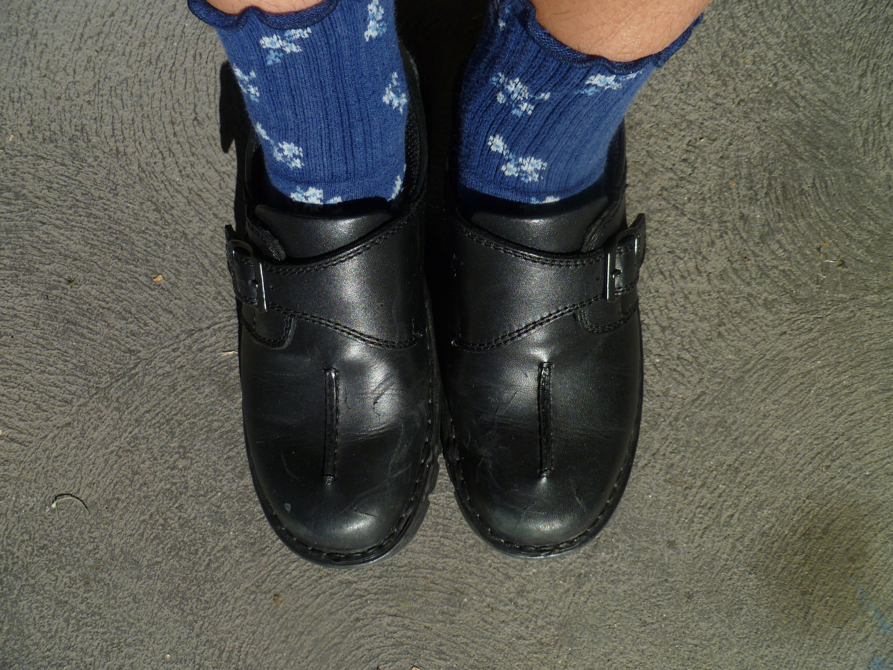
My feet are important. They carry me where I need to go. If my hands help me do what I need to do, my feet help me get there. I’ve recently been wearing my Eastland shoes a lot. My friend Anik has the same pair. When we hang out, we’re matching. It’s very cute.
Eyebrow
My eyebrows wiggle around a lot in order to express a what I’m feeling and what I’m saying. Their striking bushiness is directly from my father. I had my right eyebrow pierced last month.
Dimple
My dimples show up when I smile. I consider them an important part of who I am. Both of my parents have dimples, so I’m not sure who exactly to credit for their existence. Also; how do dimples even work?
Ear
My ears help me hear the world. Right now, I’m listening to Flying Lotus. I got them pierced in the winter. I like to make fun of people whose lobes are attached to their heads. Mine aren’t. Can you wiggle your ears? I can. Do I have ear ego?
Neck
I like to wear jewlery over my neck. This is my favorite necklace. The charm is a spur. I got it at the cowboy festival hosted at Newhall last year. Inside of my neck is my voicebox. Once I go on testosterone, my adams apple will grow, and my voice will deepen.
Shoulder
I think of my shoulders as the frame of my body. When I was rock climbing, they were a little bit stronger, but not anymore. I like a lot of clothes that tend to cut higher up on the shoulder. I like to feel pointy.
Elbow
My elbows have always been a difficult thing in the history of my body. I have had on and off eczema since I was a child, and the inside of my elbows have always been a bothered area. I would like to have tattoos around and near here at some point.
Wrist
I love my wrists. I have a watch tan from wearing watches on my left wrist. My wrists are special to me because they’re my favorite place to wear jewlery. I’ve always worn bracelets. Bracelets are memories of people and parts of myself. The one I’m wearing a lot right now is a childhood bracelet I found while decluttering.
Hand
My hands help me do everything I do in a day. They help me design, they help me write, they helped me make this website. I like to wear rings and nail polish. I got the elephant ring from Barn & Charm, a store in Newhall. I got the ring with two holes from the Pasadena City College Flea Market. I got my blue nailpolish from the Daiso at the Arcadia Mall.
Waist
I usually am wearing a wooden carabiner that my friend Thomas made for me that holds all of my keys. They’re easy to hang off any kind of clothes. Sometimes you can see my boxers from my waist band. I personally like it. It makes me feel like myself.
Knee
My knees are pretty cool. They help me walk around and sit down, which is pretty cool. Recently, they’ve also become victim to my bouts of eczema, which is less cool.
Ankle
For some reason, I have a lot of scars near and around my ankle from when I was a kid. I jumped around a lot and hurt myself accidentally that way. I like to wear cute socks. Cute socks make any outfit much better.
Feet
My feet are important. They carry me where I need to go. If my hands help me do what I need to do, my feet help me get there. I’ve recently been wearing my Eastland shoes a lot. My friend Anik has the same pair. When we hang out, we’re matching. It’s very cute.